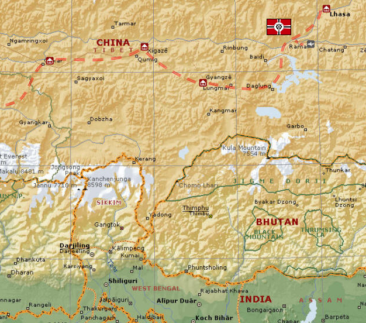

Lhasa Lhasa
East Asia, Tibet Underground Mountain Fortress Ghinius Sahalin One of Zeons secret spaceports, this base is actually in one of the many tall Himalayan mountains close to the Tibetan capital at Lhasa, rather than in the city itself. Situated entirely under the mountain, its exact location is unknown to the Federation, nor is it particularly known what is going on inside, the mountain being used for research and development of new mobile armors. In addition, it is the front line base for the East Asian front, protecting Baikonour and Odessa from a rear assault. Ghineas Sahalin A personal friend of Ghiren Zabi and a high ranking officer of the SS, Ghineas is tasked with several top secret research and development projects, as well as point defense of the Asian continent. Part of the noble Sahalin family, he is known by all the Zabis, and it is wondered whether he got his position because of familial rank or tactical skill. He is known as a bit of a psychopath to his men, who stay clear of him in all situations, preferring to deal with the family bodyguard, Norris Packard. Norris Packard An old friend and bodyguard of the Sahalin family, Norris is one of the best soldiers in the SS, having served as a Panzergrenadier in the One Week War and then transferred quickly to the mobile suit academy. He is a zealous and effective patriot, but believes in protecting Ghineas, and especially Lady Aina, above all else. Aina Sahalin A young woman and Ghineas's best test pilot, Aina has no love for the war, but does love her brother, and wishes to see his dream come true. Although she is an effective pilot, she doesn't mind her position testing new weaponry, the thought of fighting on the front lines not something she feels cut out for. Lhasa  |